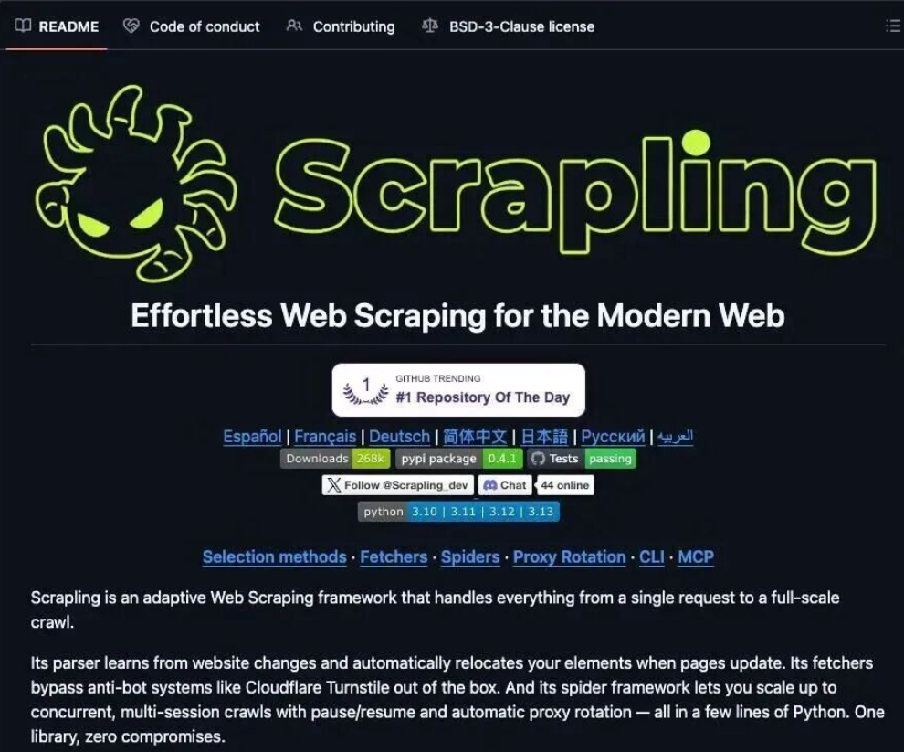
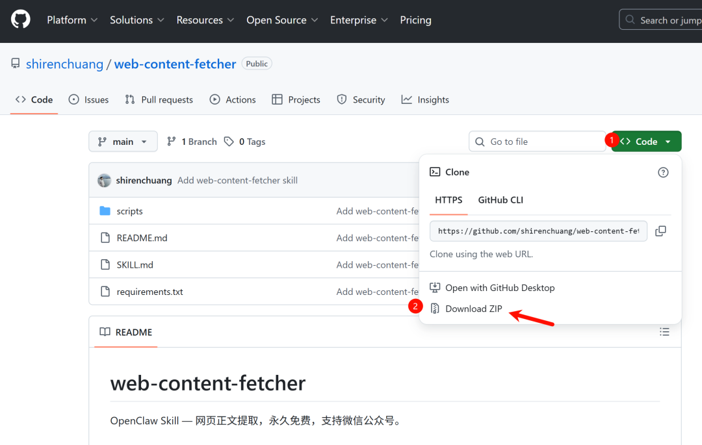
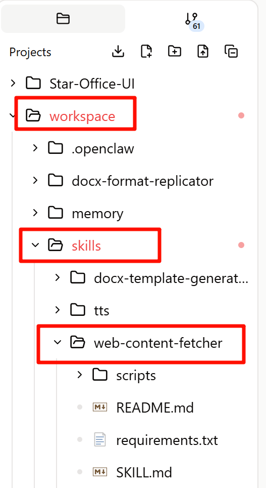
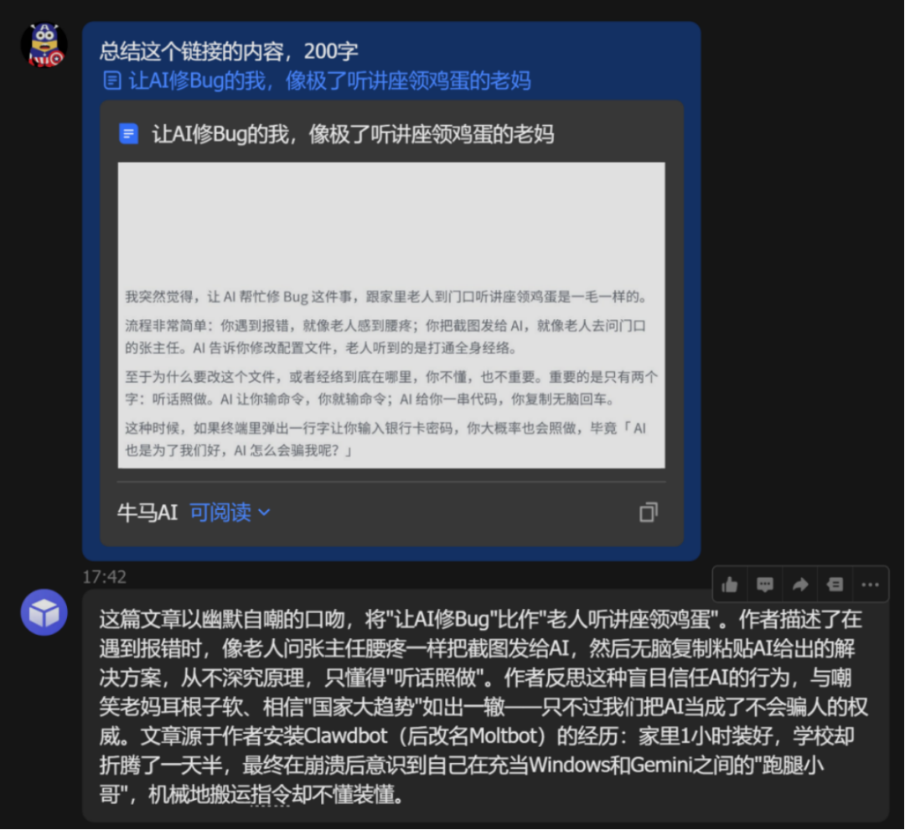
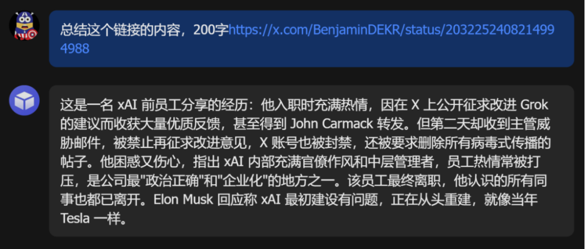

可能是龙虾提取任何网页的终极方案
大家还记得上上周《我被大模型的幻觉坑惨了》这篇文章吧？
12 个模型，11 个平台，132 次测试，最后得出一个结论：没有哪个大模型，能稳稳当当地帮你读任何一个链接。
你永远不知道它到底是真的读了，还是在忽悠人。
上次的测试是真的让我意难平，因为这个需求太刚需了：把链接塞给 AI 让它识别和总结，这是再高频不过的场景了。
但最近我刷到一个 Skill，《OpenClaw 永久免费的提取任何网页的终极方案》提供了一个解决问题的新思路，我测试了两天，跑了 N 多链接，直接说结论，值得推荐，值得写一篇分享给大家。
我先替大家总结一下这个工具的解题思路：
具体点说，它用的是三种工具的组合：Jina、Scrapling 和 web_fetch。
Jina 是其中最体面的那个。你把 URL 扔给它，它帮你把整个网页里的导航栏、广告、边栏、版权声明这些多余垃圾全部过滤掉，只把正文以干净的 Markdown 格式吐给你。
用起来非常爽，输出的内容看着就舒服。但它有个硬伤：每天只能用 200 次。对于偶尔查查资料的人，够了；对于重度用户，根本不够。

Scrapling 是路子有点野，但是真的能打。

它能绕过反爬虫机制，连微信公众号这种号称铁板一块的内容它都能读进去（Jina 在这里直接白旗投降）。
更关键的是：无限制，不要 API Key，不花一分钱。代价是，你得自己动手配环境，它不是开箱即用的那种。不过配好之后，稳如老狗。

web_fetch 是 Claude 原生的工具，给你返回的是整个网页的原始 HTML，导航、广告、页脚、各种推荐，全部一锅端，你拿到的真正有价值的正文可能只占 30%。
最妙的是这位博主把这三兄弟的调度逻辑全部封装进了一个 Skill，叫做 web-content-fetcher，并且开源。
还设计了一套很聪明的优先级：优先用 Jina，达到上限或者遇到微信公众号就切 Scrapling，web_fetch 作为最后的保底。
还有一个细节：maxChars （最大字符数）统一设成 30000，在省 token 和保留完整正文之间，找了个相当好的平衡点。
github.com/shirenchuang/web-content-fetcher

一句话总结：你终于有了一把提取网页真正的万能钥匙。
安装
安装的话，别用龙虾（因为大家现在一般都是用的 skillhub 和 clawhub 源）进行自动安装。
因为自动安装的并非博主开源的版本，无法抓取微信公众号文章，只有使用博主提供的开源版本，才能正常实现微信文章的爬取。
自己手动安装也不麻烦，先去下载 web-content-fetcher 的压缩包。

下载解压之后，先在你的 OpenClaw 的 Skills 路径里新建一个对应的文件夹，压缩包里的所有文件都上传在这个文件夹中：
~/.openclaw/workspace/skills/web-content-fetcher/
比如我是以扣子上的龙虾为例，上传到对应目录：

然后装两个 Python 依赖，以 Windows 电脑为例：
按下 Win 键，搜索 cmd（命令提示符）或 PowerShell 并打开。
再在打开的终端窗口中，复制粘贴命令：
pip install scrapling html2text --break-system-packages

粘贴好之后，按下回车键。
电脑会自动联网下载并安装这些依赖包。等待屏幕上的进度条跑完，出现 Successfully installed... 字样就说明安装成功了。
再重启 OpenClaw，Skill 自动加载，不需要额外配置。
然后我把上次那批链接，又丢进去跑了一遍。
注意，这个 Skill 的触发词是这些：
抓取某个URL的正文内容/读取某篇文章/提取网页内容/总结这个链接的内容/任何包含网页链接并要求提取/总结内容的请求
实测
ok，下面直接上真实结果，截图都在。
1.微信公众号：直接满分通过。
把上篇讲 Lovart AI 设计工具的文章链接丢进去，几秒钟，文章提取成功。200 字总结清晰完整，多角度功能、矢量化功能、使用场景，核心信息一个没丢。

这是我最在意的一关，现在一次过。没有幻觉，没有编造，你给什么它总结什么。就这一点，我觉得这个 Skill 已经值了。
2.飞书文档：提取成功，而且读懂了文章在讲什么。
把一篇飞书文档链接丢进去，直接就显示出来标题，总结准确命中了文章的核心。

内容结构、情感基调、核心观点，全部归纳到位。
3.小红书：Jina 被屏蔽，Scrapling 顶上，成功了。
这里有个细节值得单独说。丢进去一篇小红书链接，Jina Reader 先被暂时屏蔽，它自动切换到 Scrapling 再试，然后成功获取内容。一篇讲后汉隐帝刘承祐在广政殿伏杀权臣的历史笔记。

这才是这套优先级调度逻辑的价值所在。不是一条路死磕到底，是遇墙绕行，自动找备路。上次测试里，小红书几乎让所有大模型当场去世，这次 Scrapling 悄悄绕过去了。
4.X（Twitter）：成功，内容总结相当到位。
上次我测 12 个大模型，X 平台只有 Grok 能读，因为那是它的主场。这次也过了。
X 帖子链接丢进去，总结出的是一名 xAI 前员工分享的亲身经历。

没问题，它把这整段曲折的故事完整提炼出来了。
5.CSDN 博客：秒过，总结精准。
CSDN 的博客链接经常打开会弹出让你登录注册的窗口，但同样也能搞定。

6.知乎
这次还特意加试了一题知乎的帖子，上次漏了这个重要的信息源，后来评论区小伙伴提醒知乎也容易被拦住，这次试了一下，也没问题。

200 字总结把作者的三条核心论点全部命中。
7.Google Docs：坦诚报错，给了替代方案。
这是测试里唯一让我有点遗憾的结果，把一个 Google 文档链接扔进去，Jina 只能连接到 Google Docs 的界面，无法读取实际文档内容。
原因很直接：内容区域需要登录 Google 账号才能查看，Jina 只抓到了菜单栏、工具栏这些界面元素。

但注意，它没有编造。它老实告诉我进不去，解释了原因。
这很难得，读不了就说读不了，别学 Gemini 给我瞎忽悠。
整体测试下来，做个粗略统计：
稳定通过：微信公众号、飞书文档、小红书、X/Twitter、CSDN、知乎。
进不去： Google Docs。
这个成绩，比上次那 12 个大模型的平均水平，不知道高到哪里去了。
结语
不过坦白讲，这个 Skill 并不能 100% 读取任何网页，有些需要登录的私有内容、有严格防爬机制的平台，它可能还有进不去的时候。
它真正做到的事情是：对于你日常 90% 的网页抓取需求，它给了你一个稳定、免费、可预期的解法。
但我更想说的，其实是这件事背后的逻辑。
你看，Jina、Scrapling、html2text，这三个东西本来就存在，没有一个是那位博主发明的。他做的事情，是把这三个现成的工具拼在一起，设计了一套调度优先级，然后封装成一个 Skill，开放出来，让所有人直接用。
这就是 Skill 最妙的地方。
一个人攻下了一个难题，所有人都可以直接复用他的解法，不需要再从零开始踩一遍坑。
你不需要知道 Scrapling 是怎么绕过反爬的，不需要理解 Jina 的底层逻辑，你只需要把链接扔进去，等结果。
但更值得学的，其实是他解决问题的思路，遇到一个卡了很久的问题，别死盯着一个工具硬凿，先看看现有的技术里有没有能组合起来用的东西，把最优解打包成一个可复用的方案，封装好，存起来。
这个方法论，不只适用于网页提取，适用于你用 OpenClaw 做的每一件事。每次跑通一个任务，都值得停下来问自己一句：这套逻辑，能不能封装成一个 Skill？
能的话，别偷懒，封装好。
下次遇到同样的问题，你就是那个一个链接搞定所有人的人。